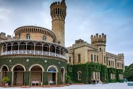
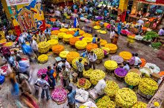
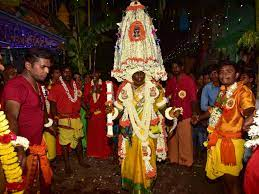
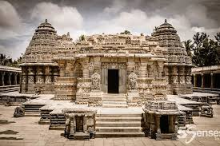

It is the capital of the state of Karnataka and is widely known as the "Silicon Valley of India" due to its thriving IT industry.
Read MoreBangalore is a vibrant and dynamic city that has something to offer for everyone. location
Bangalore is located in the southern part of India, in the state of Karnataka. It is situated on the Deccan Plateau, at an elevation of approximately 900 meters (3000 feet) above sea level.The city is surrounded by hills on all sides, with the Nandi Hills to the north and the Chamundi Hills to the south
It is the capital of the state of Karnataka and is widely known as the "Silicon Valley of India" due to its thriving IT industry. The city also has a vibrant nightlife scene with many bars, restaurants, and clubs to choose from. Apart from its IT industry, Bangalore is also a hub for biotechnology and aerospace industries. Many leading companies such as Infosys, Wipro, and HAL have their headquarters in Bangalore
Bangalore has a rich cultural heritage and is home to many historical landmarks such as the Bangalore Palace, Lal Bagh Botanical Garden, and the Tipu Sultan's Summer Palace.
Bangalore is also a food lover's paradise, offering a wide variety of cuisine, ranging from traditional South Indian delicacies like dosas and idlis to international cuisines such as Italian and Chinese.